consensus_wgcna.RmdIn this tutorial, we perform consensus co-expression network analysis using hdWGCNA. Consensus co-expression network analysis differs from the standard co-expression network analysis workflow by constructing individual networks across distinct datasets, and then computing an integrated co-expression network. This framework can be used to identify networks that are conserved across a variety of biological conditions, and it can also be used as a way to construct a unified network from any number of different datasets. Here, we provide two examples of co-expression network analysis; 1: consensus network analysis of astrocytes between biological sex in the Zhou et al. snRNA-seq dataset; 2: cross-species consensus network analysis of astrocytes from mouse and human snRNA-seq datasets.
First we load the required R libraries.
# single-cell analysis package
library(Seurat)
# plotting and data science packages
library(tidyverse)
library(cowplot)
library(patchwork)
# co-expression network analysis packages:
library(WGCNA)
library(hdWGCNA)
# network analysis & visualization package:
library(igraph)
# using the cowplot theme for ggplot
theme_set(theme_cowplot())
# set random seed for reproducibility
set.seed(12345)Download the tutorial dataset:
wget https://swaruplab.bio.uci.edu/public_data/Zhou_2020.rdsIn this section, we perform consensus network analysis between male and female donors from the Zhou et al. snRNA-seq dataset. We will also follow the “standard” workflow (not consensus), and compare the resulting gene module assignments.
First, we setup the seurat object for hdWGCNA and we construct metacells. This part of the workflow is the same as the standard hdWGCNA workflow, but we must include the relevant metadata for consensus network analysis when running MetacellsByGroups. This Seurat object has a metadata column called msex, which contains a 0 or 1 depending on the sex of the donor where a given cell originated from, so we must include msex in our group.by list within MetacellsByGroups in order to run consensus network analysis.
# load the Zhou et al snRNA-seq dataset
seurat_obj <- readRDS('data/Zhou_control.rds')
seurat_obj <- SetupForWGCNA(
seurat_obj,
gene_select = "fraction",
fraction = 0.05,
wgcna_name = 'ASC_consensus'
)
seurat_obj <- MetacellsByGroups(
seurat_obj = seurat_obj,
group.by = c("cell_type", "Sample", 'msex'),
ident.group = 'cell_type'
k = 25,
max_shared = 12,
min_cells = 50,
target_metacells = 250,
reduction = 'harmony'
)
seurat_obj <- NormalizeMetacells(seurat_obj)Next we have to set up the expression dataset for consensus network analysis. In the standard workflow, we use the function SetDatExpr to set up the expression matrix that will be used for network analyis. Instead of SetDatExpr, here we use SetMultiExpr to set up a separate expression matrix for male and female donors. This allows us to perform network analysis individually on these expression matrices.
seurat_obj <- SetMultiExpr(
seurat_obj,
group_name = "ASC",
group.by = "cell_type",
multi.group.by ="msex",
multi_groups = NULL # this parameter can be used to select a subset of groups in the multi.group.by column
)Now that we have expression matrices for male and female donors, we must identify an appropriate soft power threshold for each of these matrices separately. Instead of the TestSoftPowers function which we use in the standard hdWGCNA workflow, we use TestSoftPowersConsensus, which will perform the test for each of the expression matrices. When we plot the results with PlotSoftPowers, we get a nested list of plots for each dataset, and we can assemble the plots using patchwork.
# run soft power test
seurat_obj <- TestSoftPowersConsensus(seurat_obj)
# generate plots
plot_list <- PlotSoftPowers(seurat_obj)
# get just the scale-free topology fit plot for each group
consensus_groups <- unique(seurat_obj$msex)
p_list <- lapply(1:length(consensus_groups), function(i){
cur_group <- consensus_groups[[i]]
plot_list[[i]][[1]] + ggtitle(paste0('Sex: ', cur_group)) + theme(plot.title=element_text(hjust=0.5))
})
wrap_plots(p_list, ncol=2)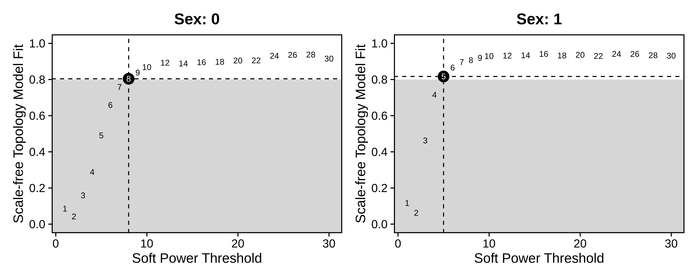
Now we construct the co-expression network and identify gene modules using the ConstructNetwork function, making sure to specify consensus=TRUE. Indicating consensus=TRUE tells hdWGCNA to construct a separate network for each expression matrix, followed by integrating the networks and identifying gene modules. Depending on the results of TestSoftPowersConsensus, we can supply a different soft power threshold for each dataset.
# build consensus network
seurat_obj <- ConstructNetwork(
seurat_obj,
soft_power=c(8,5), # soft power can be a single number of a vector with a value for each datExpr in multiExpr
consensus=TRUE,
tom_name = "Sex_Consensus"
)
# plot the dendogram
PlotDendrogram(seurat_obj, main='Sex consensus dendrogram')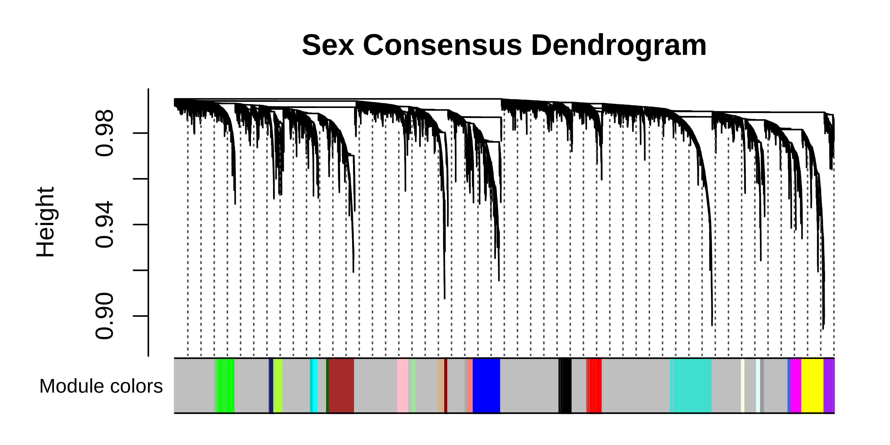
We can compare the consensus network results to the standard hdWGCNA workflow.
# setup new hdWGCNA experiment
seurat_obj <- SetupForWGCNA(
seurat_obj,
gene_select = "fraction",
fraction = 0.05,
wgcna_name = 'ASC_standard',
metacell_location = 'ASC' # use the same metacells
)
seurat_obj <- NormalizeMetacells(seurat_obj)
# construct network
seurat_obj <- SetDatExpr(seurat_obj,group_name = "ASC",group.by = "cell_type")
seurat_obj <- TestSoftPowers(seurat_obj)
seurat_obj <- ConstructNetwork(seurat_obj,soft_power=8, tom_name = "ASC_standard")
# plot the dendrogram
PlotDendrogram(seurat_obj, main='ASC standard Dendrogram')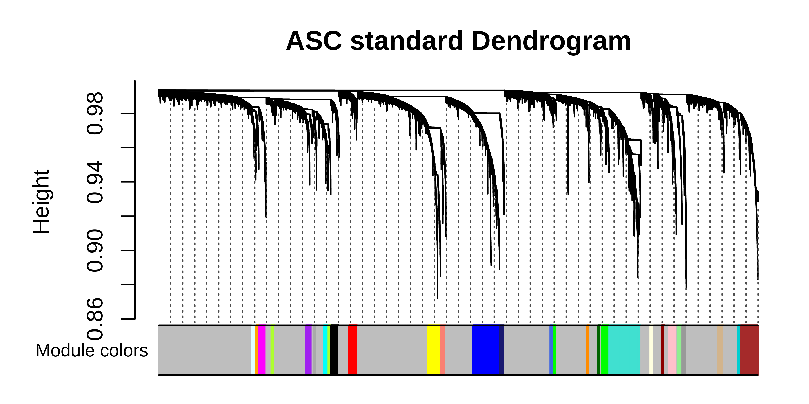
We can plot the gene module assignments from the standard workflow under those from the consensus analysis in the same dendrogram plot as a rough comparison.
# get both sets of modules
modules <- GetModules(seurat_obj, 'ASC_standard')
consensus_modules <- GetModules(seurat_obj, 'ASC')
# get consensus dendrogram
net <- GetNetworkData(seurat_obj, wgcna_name="ASC")
dendro <- net$dendrograms[[1]]
# get the gene and module color for consensus
consensus_genes <- consensus_modules$gene_name
consensus_colors <- consensus_modules$color
names(consensus_colors) <- consensus_genes
# get the gene and module color for standard
genes <- modules$gene_name
colors <- modules$color
names(colors) <- genes
# re-order the genes to match the consensus genes
colors <- colors[consensus_genes]
# set up dataframe for plotting
color_df <- data.frame(
consensus = consensus_colors,
standard = colors
)
# plot dendrogram using WGCNA function
WGCNA::plotDendroAndColors(
net$dendrograms[[1]],
color_df,
groupLabels=colnames(color_df),
dendroLabels = FALSE, hang = 0.03, addGuide = TRUE, guideHang = 0.05,
main = "Sex consensus dendrogram",
)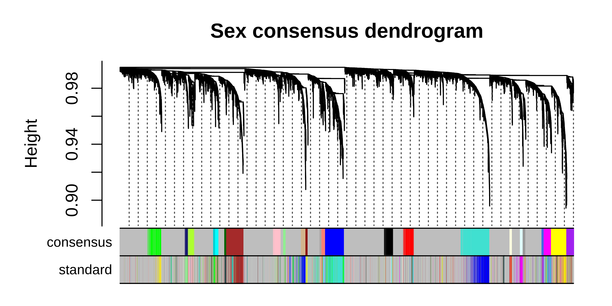
We can see that many co-expression modules are identified by both the consensus and standard workflows, but there are also modules that are unique to each workflow. Now we can perform any of the downstream analysis tasks using the consensus network, for example network visualization:
library(reshape2)
library(igraph)
# change active hdWGCNA experiment to consensus
seurat_obj <- SetActiveWGCNA(seurat_obj, 'ASC_consensus')
# compute eigengenes and connectivity
seurat_obj <- ModuleEigengenes(seurat_obj)
seurat_obj <- ModuleConnectivity(seurat_obj, group_name ='ASC', group.by='cell_type')
# visualize network with semi-supervised UMAP
seurat_obj <- RunModuleUMAP(
seurat_obj,
n_hubs = 5,
n_neighbors=5,
min_dist=0.1,
spread=2,
wgcna_name = 'ASC',
target_weight=0.05,
supervised=TRUE
)
ModuleUMAPPlot(
seurat_obj,
edge.alpha=0.5,
sample_edges=TRUE,
keep_grey_edges=FALSE,
edge_prop=0.075,
label_hubs=0
)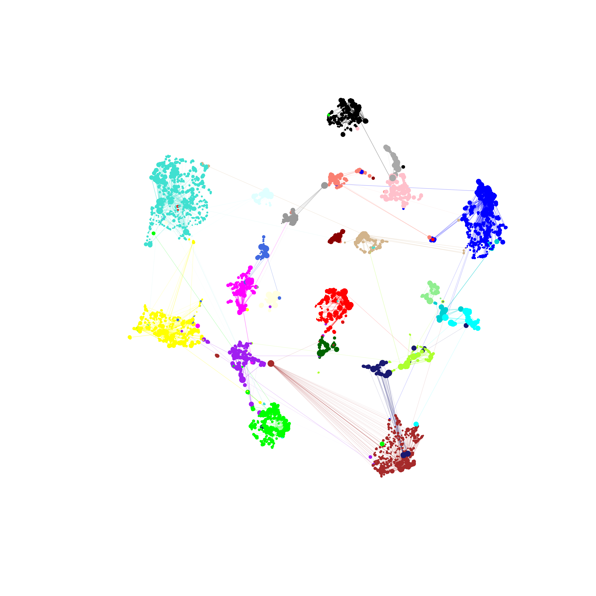
In this section, we cover a more complex example of consensus network analysis using astrocytes from mouse and human cortex snRNA-seq datasets. The main difference between this section and Example 1 is that here we start from two different Seurat objects, so this section is more applicable for those who wish to perform consensus network analysis from two or more different datasets. For the cross-species analysis, we require a table that maps gene names between the different species, so we can convert the gene names such that they are consistent in both datasets. We provide this table for this analysis, which we obtained from BioMart.
First, download the human and mouse datasets.
wget https://swaruplab.bio.uci.edu/public_data/Zhou_2020.rds
wget https://swaruplab.bio.uci.edu/public_data/Zhou_2020_mouse.rds
wget https://swaruplab.bio.uci.edu/public_data/hg38_mm10_orthologs_2021.txtNext, we load the data, convert the mouse gene names to human, and construct a merged Seurat object. Note that when using datasets from different sources, metadata columns may be named differently, so be careful to ensure that any relevant metadata is properly renamed.
# load mouse <-> human gene name table:
hg38_mm10_genes <- read.table("hg38_mm10_orthologs_2021.txt", sep='\t', header=TRUE)
colnames(hg38_mm10_genes) <-c('hg38_id', 'mm10_id', 'mm10_name', 'hg38_name')
# remove entries that don't have an ortholog
hg38_mm10_genes <- subset(hg38_mm10_genes, mm10_name != '' & hg38_name != '')
# show what the table looks like
head(hg38_mm10_genes)hg38_id mm10_id mm10_name hg38_name
6 ENSG00000198888 ENSMUSG00000064341 mt-Nd1 MT-ND1
10 ENSG00000198763 ENSMUSG00000064345 mt-Nd2 MT-ND2
16 ENSG00000198804 ENSMUSG00000064351 mt-Co1 MT-CO1
19 ENSG00000198712 ENSMUSG00000064354 mt-Co2 MT-CO2
21 ENSG00000228253 ENSMUSG00000064356 mt-Atp8 MT-ATP8
22 ENSG00000198899 ENSMUSG00000064357 mt-Atp6 MT-ATP6The hg38_mm10_genes table contains a gene ID and gene symbol (name) for mm10 and hg38, which we can use to translate the gene names in the mouse dataset to their human orthologs.
# load seurat objects
seurat_mouse <- readRDS('Zhou_2020_mouse.rds')
seurat_obj <- readRDS('Zhou_2020.rds')
# re-order the gene table by mouse genes
mm10_genes <- unique(hg38_mm10_genes$mm10_name)
hg38_genes <- unique(hg38_mm10_genes$hg38_name)
hg38_mm10_genes <- hg38_mm10_genes[match(mm10_genes, hg38_mm10_genes$mm10_name),]
# get the mouse counts matrix, keep only genes with a human ortholog
X_mouse <- GetAssayData(seurat_mouse, slot='counts')
X_mouse <- X_mouse[rownames(X_mouse) %in% hg38_mm10_genes$mm10_name,]
# rename mouse genes to human ortholog
ix <- match(rownames(X_mouse), hg38_mm10_genes$mm10_name)
converted_genes <- hg38_mm10_genes[ix,'hg38_name']
rownames(X_mouse) <- converted_genes
colnames(X_mouse) <- paste0(colnames(X_mouse), '_mouse')
# get the human counts matrix
X_human <- GetAssayData(seurat_obj, slot='counts')
# what genes are in common?
genes_common <- intersect(rownames(X_mouse), rownames(X_human))
X_human <- X_human[genes_common,]
colnames(X_human) <- paste0(colnames(X_human), '_human')
# make sure to only keep genes that are common in the mouse and human datasets
X_mouse <- X_mouse[genes_common,]
# set up metadata table for mouse
mouse_meta <- seurat_mouse@meta.data %>% dplyr::select(c(Sample.ID, Wt.Tg, Age, Cell.Types)) %>%
dplyr::rename(c(Sample=Sample.ID, cell_type=Cell.Types, condition=Wt.Tg))
rownames(mouse_meta) <- colnames(X_mouse)
# set up metadata table for mouse
human_meta <- seurat_obj@meta.data %>% dplyr::select(c(Sample, group, age_death, cell_type)) %>%
dplyr::rename(c(condition=group, Age=age_death))
rownames(human_meta) <- colnames(X_human)
# make mouse seurat obj
seurat_m <- CreateSeuratObject(X_mouse, meta = mouse_meta)
seurat_h <- CreateSeuratObject(X_human, meta = human_meta)
# merge:
seurat_m$Species <- 'mouse'
seurat_h$Species <- 'human'
seurat_merged <- merge(seurat_m, seurat_h)We run the Seurat workflow to process this dataset, using Harmony to integrate cells across species.
seurat_merged <- NormalizeData(seurat_merged)
seurat_merged <- FindVariableFeatures(seurat_merged, nfeatures=3000)
seurat_merged <- ScaleData(seurat_merged)
seurat_merged <- RunPCA(seurat_merged)
seurat_merged <- RunHarmony(seurat_merged, group.by.vars = 'Species', reduction='pca', dims=1:30)
seurat_merged <- RunUMAP(seurat_merged, reduction='harmony', dims=1:30, min.dist=0.3)
DimPlot(seurat_merged, group.by='cell_type', split.by='Species', raster=FALSE, label=TRUE) + umap_theme()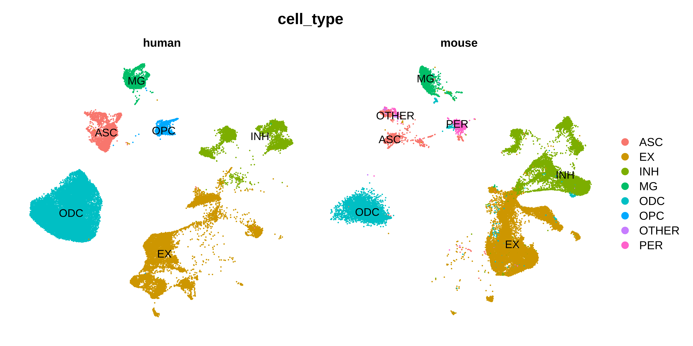
Now we have a Seurat object that is ready for consensus network analysis. We perform consensus network analysis with hdWGCNA using a similar approach as in Example 1.
seurat_merged <- SetupForWGCNA(
seurat_merged,
gene_select = "fraction",
fraction = 0.05,
wgcna_name = 'ASC_consensus'
)
# construct metacells:
seurat_merged <- MetacellsByGroups(
seurat_merged,
group.by = c("cell_type", "Sample", 'Species'),
k = 25,
max_shared = 12,
min_cells = 50,
target_metacells = 250,
reduction = 'harmony',
ident.group = 'cell_type'
)
seurat_merged <- NormalizeMetacells(seurat_merged)
# setup expression matrices for each species in astrocytes
seurat_merged <- SetMultiExpr(
seurat_merged,
group_name = "ASC",
group.by = "cell_type",
multi.group.by ="Species",
multi_groups = NULL
)
# identify soft power thresholds
seurat_merged <- TestSoftPowersConsensus(seurat_merged)
# plot soft power results
plot_list <- PlotSoftPowers(seurat_merged)
consensus_groups <- unique(seurat_merged$Species)
p_list <- lapply(1:length(consensus_groups), function(i){
cur_group <- consensus_groups[[i]]
plot_list[[i]][[1]] + ggtitle(paste0(cur_group)) + theme(plot.title=element_text(hjust=0.5))
})
wrap_plots(p_list, ncol=2)
# consensus network analysis
seurat_merged <- ConstructNetwork(
seurat_merged,
soft_power=c(7,7),
consensus=TRUE,
tom_name = "Species_Consensus"
)
# plot the dendrogram
PlotDendrogram(seurat_merged, main='ASC cross species dendrogram')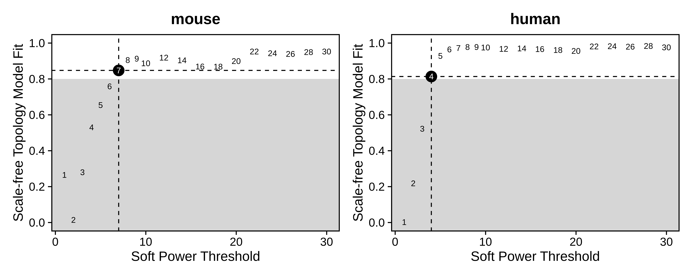
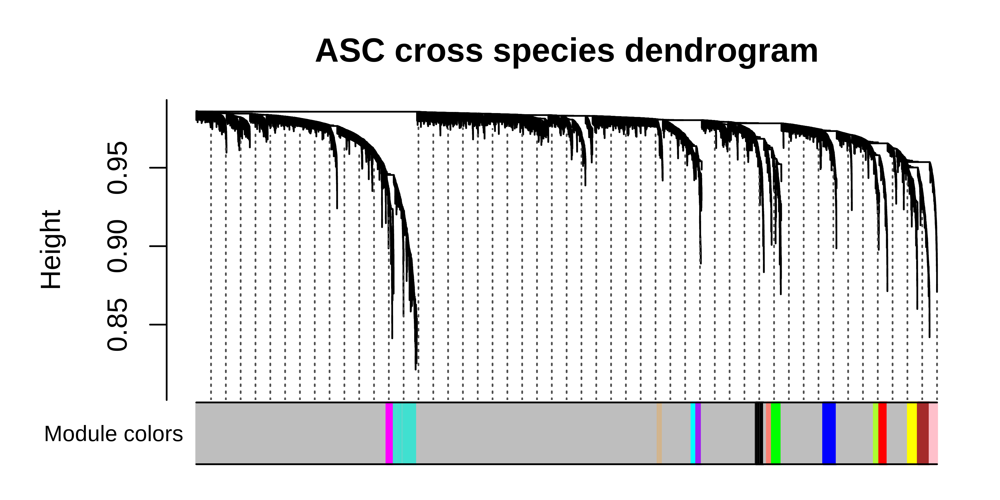
We can compare the consensus network results to the standard hdWGCNA workflow. By checking the resulting dendrogram from the standard workflow, it is clearthat much of the underlying co-expression structure is lost.
seurat_merged <- SetupForWGCNA(
seurat_merged,
gene_select = "fraction",
fraction = 0.05,
wgcna_name = 'ASC_standard',
metacell_location = 'ASC_consensus'
)
seurat_merged <- NormalizeMetacells(seurat_merged)
seurat_merged <- SetDatExpr(seurat_merged, group_name = "ASC", group.by = "cell_type")
seurat_merged <- TestSoftPowers(seurat_merged, setDatExpr = FALSE)
seurat_merged <- ConstructNetwork(seurat_merged, tom_name = "Species_ASC_standard")
# plot the dendrogram
PlotDendrogram(seurat_merged, main='ASC standard Dendrogram')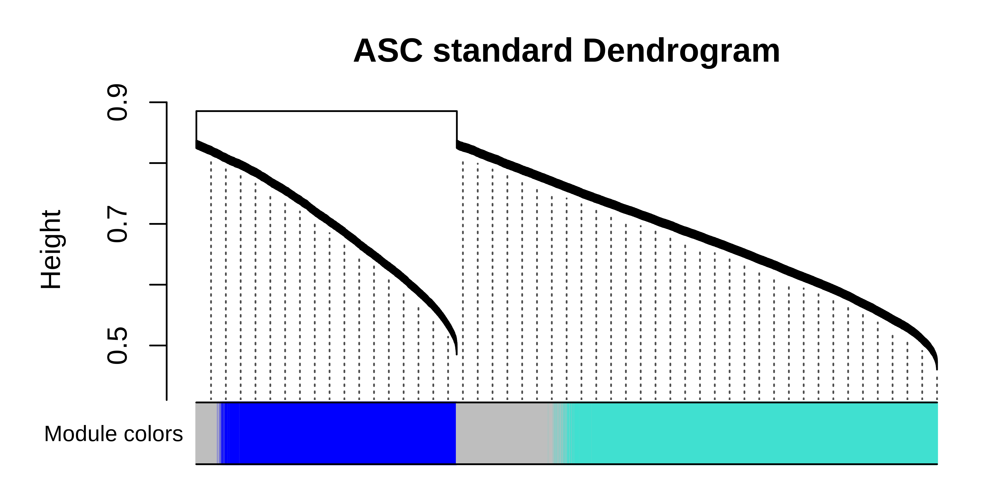
modules <- GetModules(seurat_merged, 'ASC_standard')
consensus_modules <- GetModules(seurat_merged, 'ASC_consensus')
# get consensus dendro
net <- GetNetworkData(seurat_merged, wgcna_name="ASC_consensus")
consensus_genes <- consensus_modules$gene_name
consensus_colors <- consensus_modules$color
names(consensus_colors) <- consensus_genes
genes <- modules$gene_name
colors <- modules$color
names(colors) <- genes
colors <- colors[consensus_genes]
color_df <- data.frame(
consensus = consensus_colors,
standard = colors
)
# plot dendrogram
pdf(paste0(fig_dir, "cross_species_dendro_compare.pdf"),height=3, width=6)
WGCNA::plotDendroAndColors(
net$dendrograms[[1]],
color_df,
groupLabels=colnames(color_df),
dendroLabels = FALSE, hang = 0.03, addGuide = TRUE, guideHang = 0.05,
main = "ASC cross species consensus dendrogram",
)
dev.off()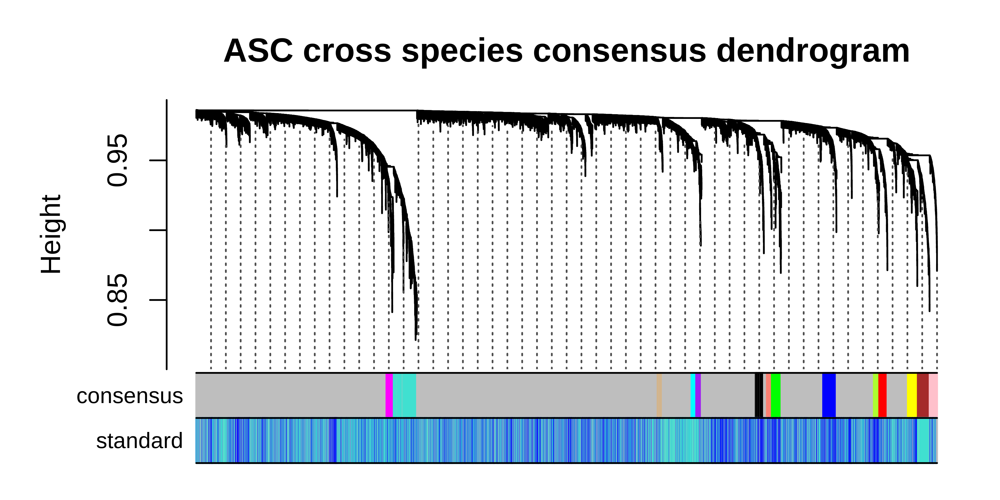
It is clear to see that much of the co-expression structure is missing when using the standard workflow when the dataset contains vast differences coming from the individual species. Once again, we can take the consensus network and perform any of the downstream hdWGCNA analysis steps.
# change the active WGCNA back to the consensus
seurat_merged <- SetActiveWGCNA(seurat_merged, 'ASC_consensus')
# compute module eigengenes and connectivity
seurat_merged <- ModuleEigengenes(seurat_merged, group.by.vars="Species")
seurat_merged <- ModuleConnectivity(seurat_merged, group_name ='ASC', group.by='cell_type')
# re-name modules
seurat_merged <- ResetModuleNames(seurat_merged, new_name = "ASC-CM")
# visualize network with UMAP
seurat_merged <- RunModuleUMAP(
seurat_merged,
n_hubs = 5,
n_neighbors=15,
min_dist=0.3,
spread=5
)
ModuleUMAPPlot(
seurat_merged,
edge.alpha=0.5,
sample_edges=TRUE,
keep_grey_edges=FALSE,
edge_prop=0.075, # taking the top 20% strongest edges in each module
label_hubs=0 # how many hub genes to plot per module?
)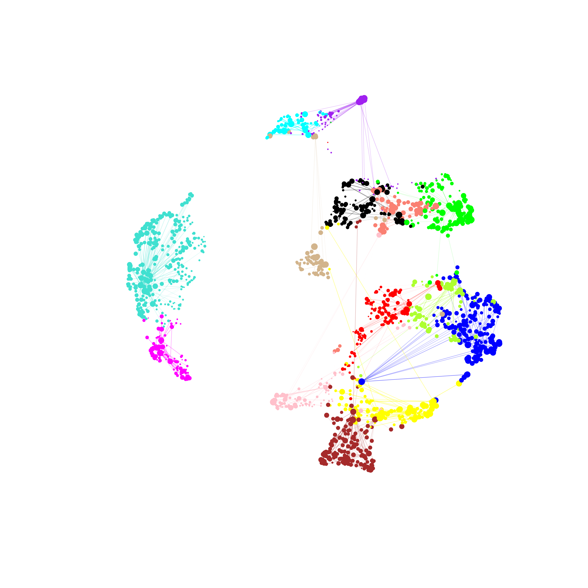
In summary, consensus co-expression network analysis is a useful alternative to the standard hdWGCNA workflow for cases where you want to build an integrated co-expression network using different datasets/batches or biological conditions.